Полный заезд: 135.2 с игрового времени, без эвакуации. Запись без ускорения, с настоящим звуком игры. QA-автопилот управляет рулём и педалями через обычную физику. Видео записывает игровой canvas; HUD виден на кадрах ниже. Это Chromium с эмуляцией горизонтального экрана, не проверка физического телефона.
Чашка, стул и насекомое используют подключённые художественные модели. Остальная мебель и приборы: оформленная проверяемая геометрия для следующего художественного прохода, не финальный арт. Тост и капли используют временные звуки.
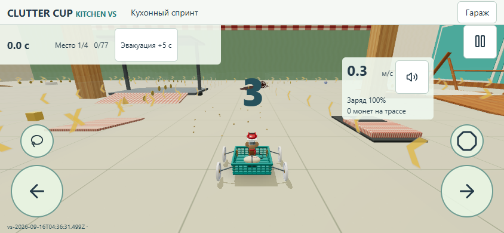
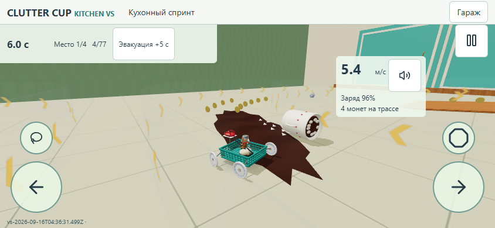
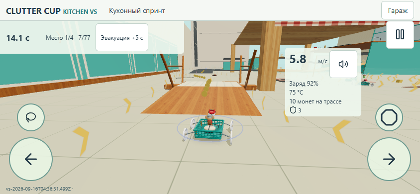
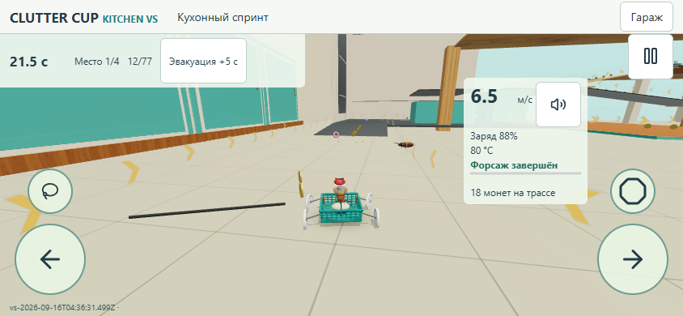
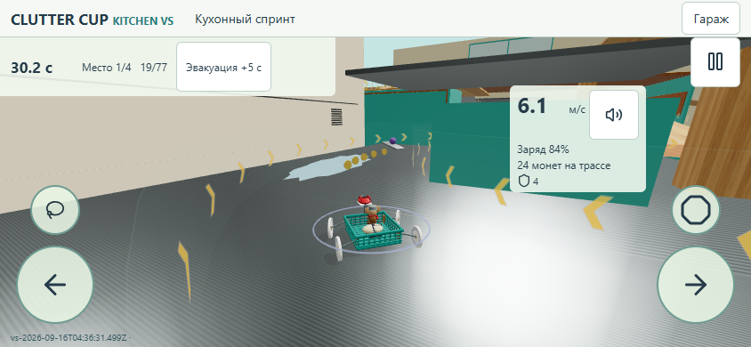
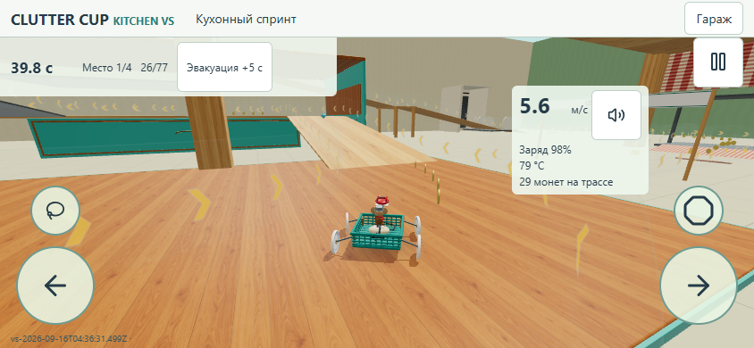
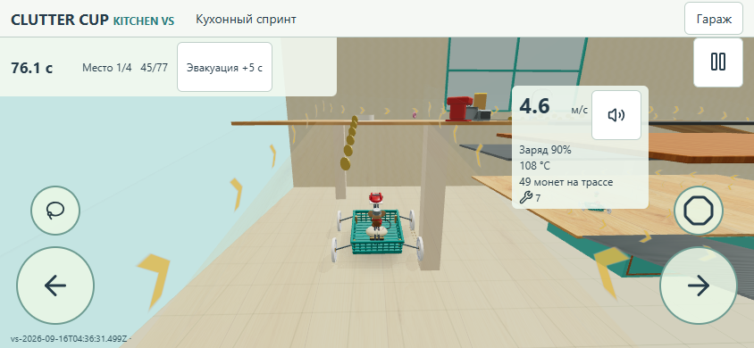
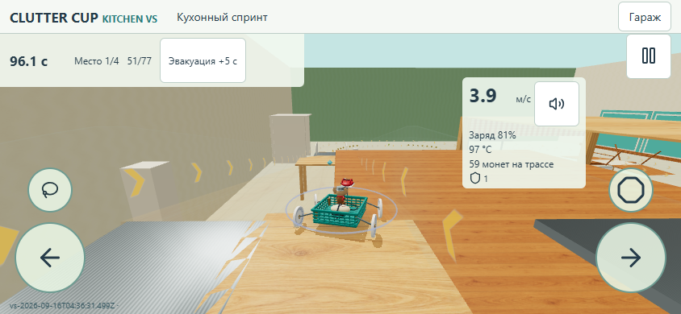
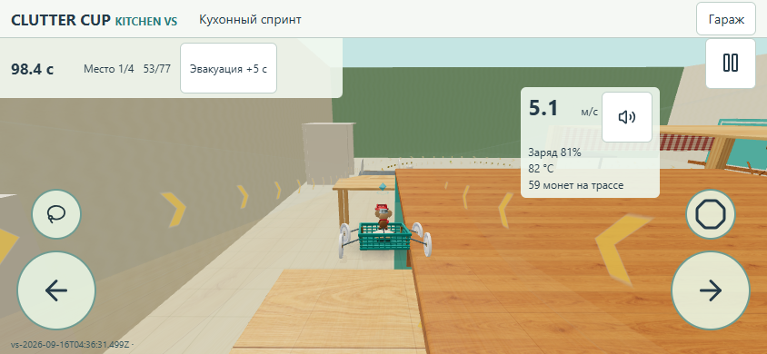
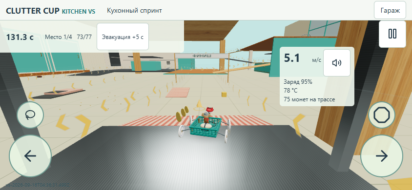
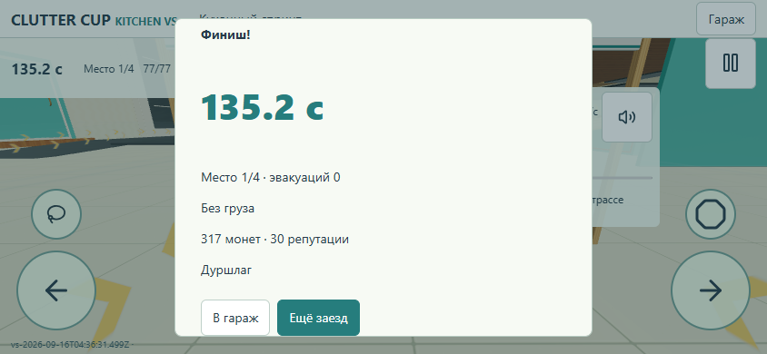
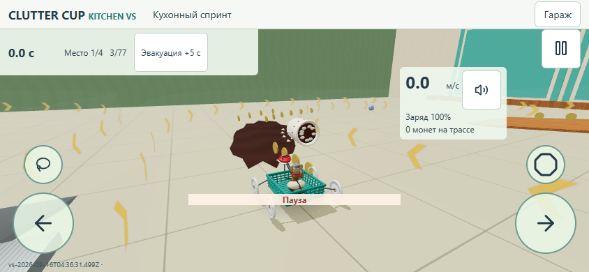
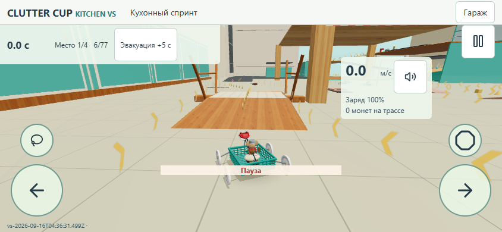
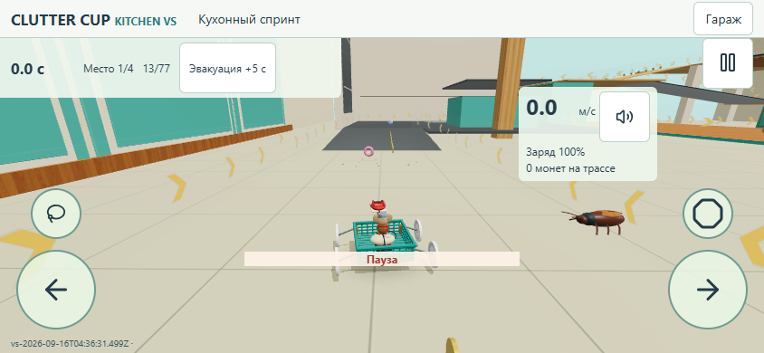
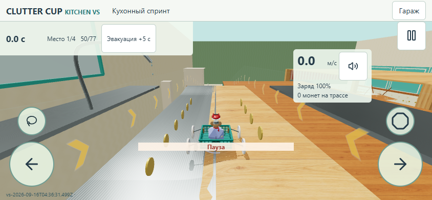
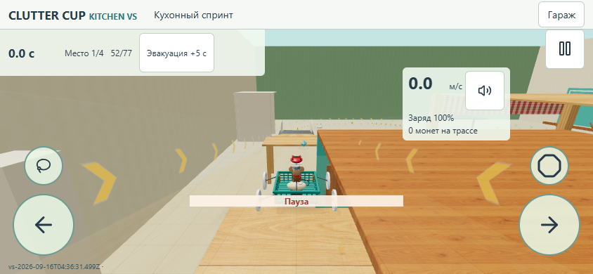
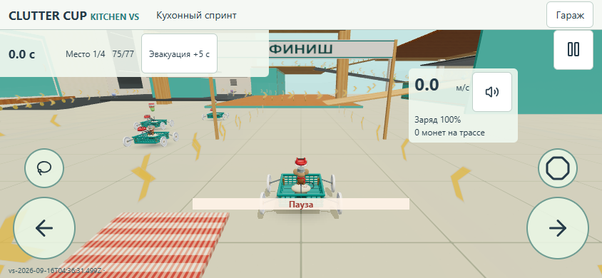
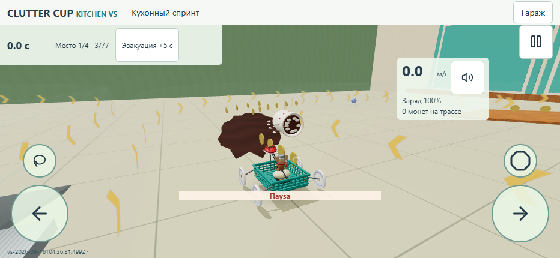
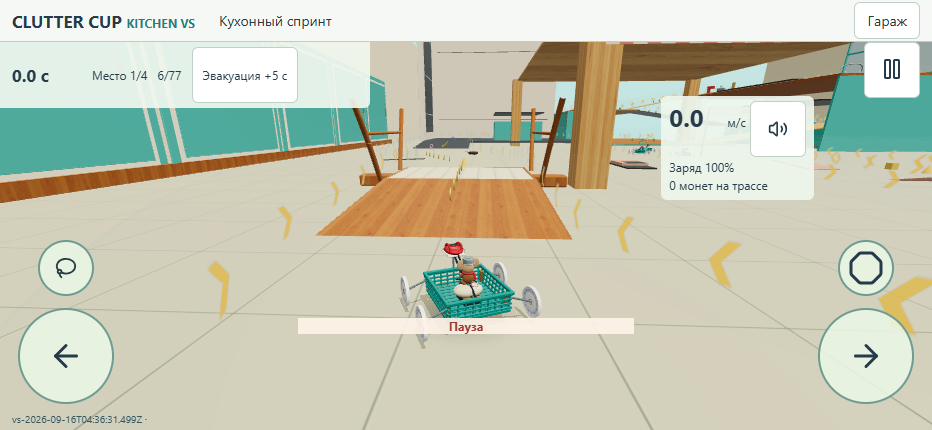
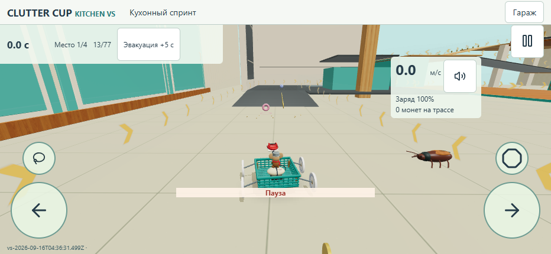
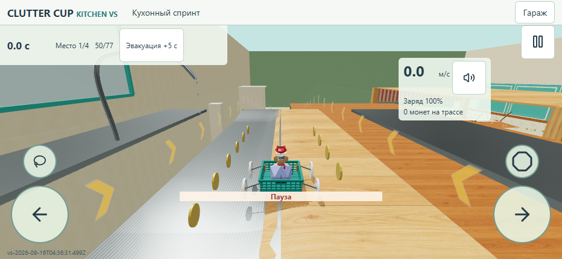
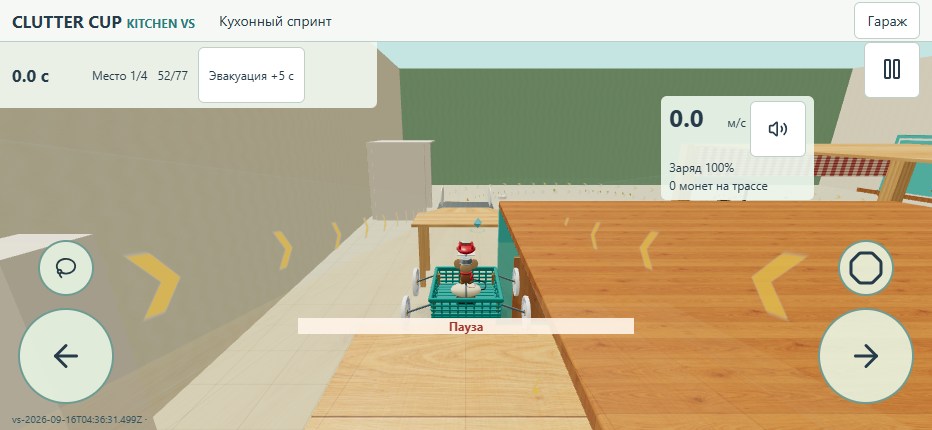
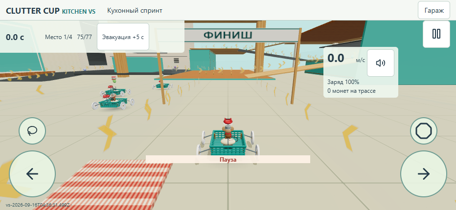
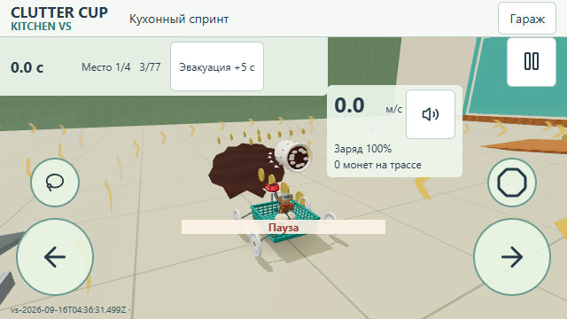
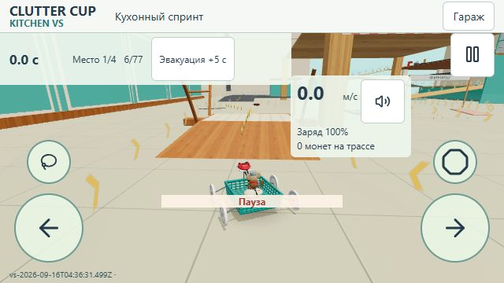
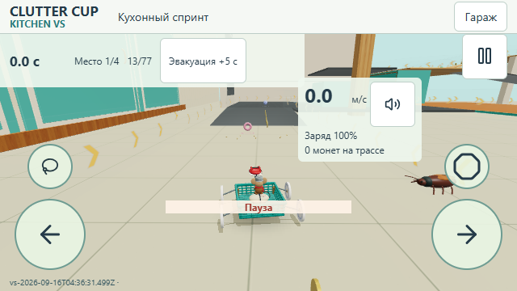
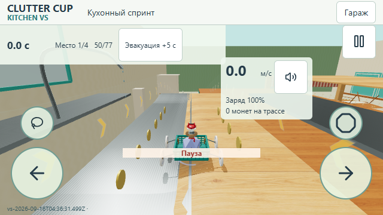
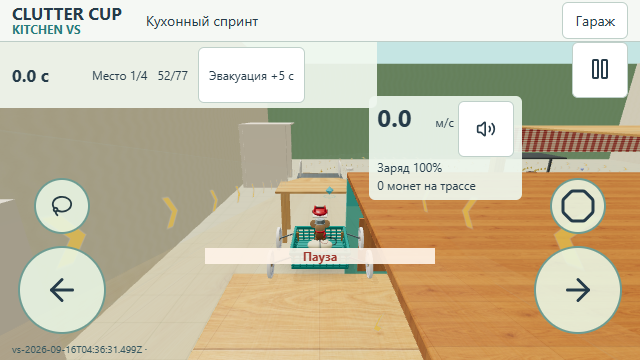
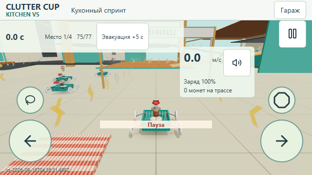